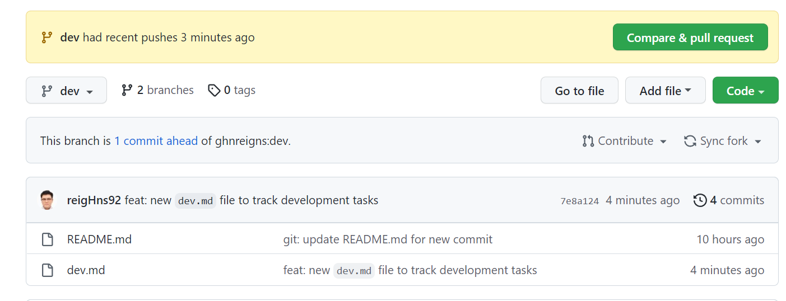
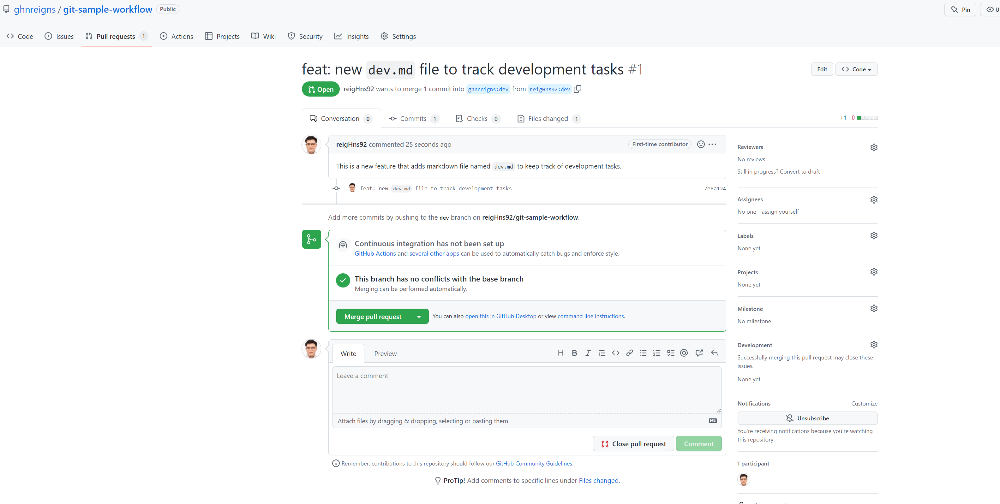
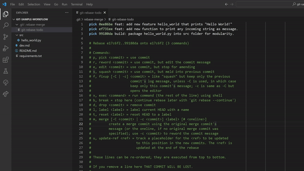

Contributing to Open Source Projects, A Generic Sample Workflow
This workflow described in this section is a generic workflow, for other detailed models of workflows, refer to Atlassian's Git Workflows for more details.
Fork the Repository
We will first start off by going to the repository you are interested in and click on the Fork button on the top right.
I will use a public repository named git-sample-workflow from my other account.
This will replicate his entire repository into my own GitHub account.
Remember to uncheck the box Copy the main branch only
if you decide to work on the forked repository's branches as well.
Clone your Forked Repository
I have a fork of the test repository on my GitHub server, but to start developing, I will have to clone this forked repository locally on my computer.
Depending on HTTPS or SSH key, one might copy different URLs for the forked repository.
~/gaohn $ git clone https://github.com/reigHns92/git-sample-workflow.git
Cloning into 'git-sample-workflow'...
remote: Enumerating objects: 6, done.
remote: Counting objects: 100% (6/6), done.
remote: Compressing objects: 100% (3/3), done.
remote: Total 6 (delta 0), reused 0 (delta 0), pack-reused 0
Receiving objects: 100% (6/6), done.
For a more detailed step-by-step guide, GitHub Docs's Quickstart: Fork a repo provides a templated method to do fork and clone.
Sync Forked Repository with Upstream
Before we go on, we define two key terms in the context of GitHub Forks:
origin: this refers to one's own repository (i.e. the forked and cloned repository on your personal account);upstream: generally refers to the original repository that you have forked.
In general, it is also useful to understand upstreams and downstreams.
Back to where we left off, you can continue to develop on the forked repository but the
original repository you forked from (the upstream) will not automatically sync with
your origin. In other words, if the upstream repository made 10 new commits, your origin
will have no information on those 10 new commits.
To be able to sync changes, we will have to first configure a remote for the fork, and fetch from upstream to sync.
Configuring a Remote for a Forked Repository
The steps are referenced from GitHub Docs. They have included steps for different OS. We will reproduce the steps on macOS.
-
Open the terminal;
-
A handy command to check what remote repository your forked repo has. Note that one can have many remotes!
list out all remotes 1 2 3 4 5
~/gaohn $ cd git-sample-workflow ~/gaohn/git-sample-workflow $ git remote -v > origin https://github.com/reigHns92/git-sample-workflow.git (fetch) > origin https://github.com/reigHns92/git-sample-workflow.git (push) -
Specify a new remote upstream repository that will be synced with the fork. To do so, go to the original repository (the one you forked from) and copy the URLs (HTTPS or SSH) to add to remote (upstream).
configuring remote for forked repo 1 2 3 4
~/gaohn/git-sample-workflow $ git remote add upstream https://github.com/ghnreigns/git-sample-workflow.git > origin https://github.com/reigHns92/git-sample-workflow.git (fetch) > origin https://github.com/reigHns92/git-sample-workflow.git (push)You can verify the new upstream repository is added by checking
git remove -vagain.list out all remotes 1 2 3 4 5 6
~/gaohn/git-sample-workflow $ git remote -v > origin https://github.com/reigHns92/git-sample-workflow.git (fetch) > origin https://github.com/reigHns92/git-sample-workflow.git (push) > upstream https://github.com/ghnreigns/git-sample-workflow.git (fetch) > upstream https://github.com/ghnreigns/git-sample-workflow.git (push)
Syncing the Forked Repository with Upstream
Now I will use my other account to make a new commit 32f5bbd on the repository's main branch (i.e the upstream) and now my forked repository will be 1 commit behind.

To keep my repository up to date, we will refer to GitHub Docs section on syncing a fork branch from the command line.
-
In the same terminal, we fetch all branches and commites from the upstream repository.
fetching from upstream repo 1 2 3 4 5 6 7 8 9
~/gaohn/git-sample-workflow $ git fetch upstream > remote: Enumerating objects: 5, done. > remote: Counting objects: 100% (5/5), done. > remote: Compressing objects: 100% (2/2), done. > remote: Total 3 (delta 1), reused 0 (delta 0), pack-reused 0 > Unpacking objects: 100% (3/3), 711 bytes | 71.00 KiB/s, done. > From https://github.com/ghnreigns/git-sample-workflow > * [new branch] main -> upstream/main -
Switch to your fork's main branch (or the branch you want the changes to be synced and merged).
~/gaohn/git-sample-workflow $ git checkout main -
Before you merge, you can use
git logfrom the previous section to check what was committed on the upstream repository.checking what was committed on upstream 1~/gaohn/git-sample-workflow $ git log --oneline upstream/main..mainand it indeed returns the message
32f5bbd (upstream/main) git: update README.md for new commitwhich was indeed the commit 32f5bbd done on my other account. -
Merge the changes from the upstream default branch - in this case,
upstream/main- into your local default branch. This brings your fork's default branch into sync with the upstream repository, without losing your local changes.merge with upstream 1 2 3 4 5 6
~/gaohn/git-sample-workflow $ git merge upstream/main > Updating 2d47f2d..32f5bbd > Fast-forward > README.md | 2 ++ > 1 file changed, 2 insertions(+) -
Now it is time to push the commits to the origin repository, a quick
git statuswill tell you that you are 1 commit ahead of the origin repository.checking status 1 2 3 4 5
~/gaohn/git-sample-workflow $ git status > On branch main > Your branch is ahead of 'origin/main' by 1 commit. > (use "git push" to publish your local commits)and we will use
git pushto push the commits to the origin repository.pushing to origin 1 2 3 4 5 6
~/gaohn/git-sample-workflow $ git push -u origin main > Total 0 (delta 0), reused 0 (delta 0), pack-reused 0 > To https://github.com/reigHns92/git-sample-workflow.git > 2d47f2d..32f5bbd main -> main > Branch 'main' set up to track remote branch 'main' from 'origin'.After this step, the origin (forked) repo of mine will be in sync with the upstream as can be verified by the message "This branch is up to date with ghnreigns/git-sample-workflow:main." on your main branch github.
Syncing the Forked Repository with Upstream's Other Branches
Let's say our upstream repository created a new branch dev and we want to sync our forked repository with it
(note that our forked repository origin does not have this branch yet).
We can first git fetch upstream to fetch all branches and commits from the upstream repository.
We see that git tells us the following:
From https://github.com/ghnreigns/git-sample-workflow
* [new branch] dev -> upstream/dev
which means that the upstream repository has a new branch dev and it "downloads (fetch)" it to our local repository.
Notice that the dev branch does not automatically appear in your local git (i.e. calling git checkout dev does not work).
The dev branch exists in both origin and upstream as can be seen by git branch -a.
There are two ways to "fetch" the dev repo to your local:
git checkout -b dev upstream/devwill create a branch nameddevthat pulls the information from theupstream/devbranch;- Alternatively, you can
git checkout -b dev origin/mainwhich essentially fetches thedevbranch on your forked repo and then we can dogit merge upstream/devto be in sync.
Creating Pull Request
Now on my local dev branch, I made some changes and committed to
7e8a124
using git push -u origin dev.
I now want to create a pull request for the upstream repository owner to see my changes, and to merge into his repo if necessary.
We first go to our origin (forked) repository and see that there is a new popup on "compare and pull request".
We click it and the following interface will appear, that is for you to write a message to the upstream author.

Once you created pull request, you can wait for the upstream author to decide and reply. Since I am the owner of the other account, I went in and see the following:

and proceeded to approve the merge request.
We used the default option to merge the pull request, which is to merge into the dev branch
of the upstream repository and create a new commit (SHA 1fa405d). We can have different types of merge
which we can read up more here.
Consequently, you will need to repeat the following steps to sync your forked repository's dev branch with the upstream repository's dev branch:
| syncing forked repo with upstream | |
|---|---|
1 2 3 4 | |
even though the point is slightly moot since this step is exactly the same as the previous commit.
Git Rebase (My Workflow) vs Git Merge
We discuss how we can use git rebase to clean up commits before merging into the upstream repository.
This workflow can be extremely versatile, so I will only be discussing the workflow that I use.
Git Rebase
Let's say you are on your origin/dev branch and decides to create a new feature.
You can create a new branch feat-hello-world and do your work on it.
| creating new branch | |
|---|---|
1 | |
You then create a new script hello_world.py which prints "Hello World!" and commit it to your local repository.
| creating new script | |
|---|---|
1 2 3 4 5 6 7 | |
You then continue developing and added a new function print_message() to the hello_world script
such that the function can take in a string and print it to console.
| adding new function | |
|---|---|
1 2 3 4 | |
After you are done with the feature, I packaged the script hello_world into a folder named src.
| packaging script | |
|---|---|
1 2 3 4 5 6 7 8 | |
Now I am ready to merge my feat-hello-world branch into the dev branch of the upstream repository.
Before that, I want to clean up my commits because commits 0ee86be and ef731ee are quite similar
in what they do, both adding new features to the hello_world script and can be merged into one commit.
We can do this by using git rebase -i to interactively rebase my commits. But since we want to rebase
on top of the dev branch of the upstream repository, we need to first fetch the upstream repository (if you have not done so already).
Subsequently, we can rebase our feat-hello-world branch onto the dev branch of the upstream repository as follows.
| rebase onto upstream/dev | |
|---|---|
1 2 | |
This will open up a text editor with the following content, shown in the gif below.

Note that we replaced pick of ef731ee with fixup to squash the commit into the previous commit.
We did not use squash because we do not want to keep the commit message of ef731ee. Therefore,
fixup will keep the commit message of 0ee86be and discard the commit message of ef731ee while
squashing the commit.
Now we will see a message Successfully rebased and updated refs/heads/feat-hello-world. and
we can force push our branch to the remote repository.
| force push to remote | |
|---|---|
1 | |
We are now ready to create a pull request
to merge our feat-hello-world branch into the dev branch.
Note
We have successfully cleaned up our commits by using git rebase -i to squash two commits into one.